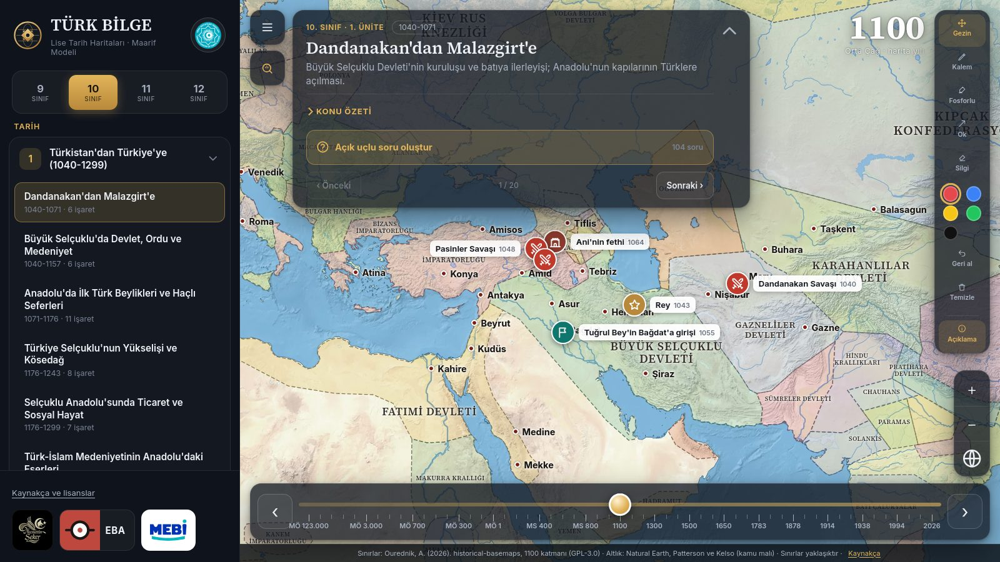
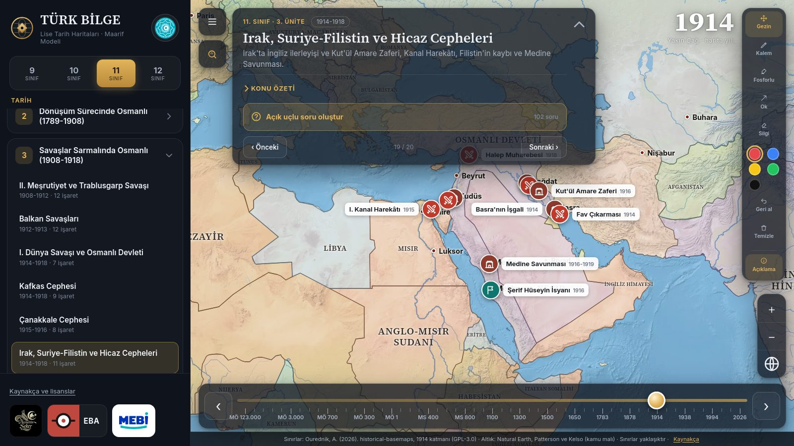
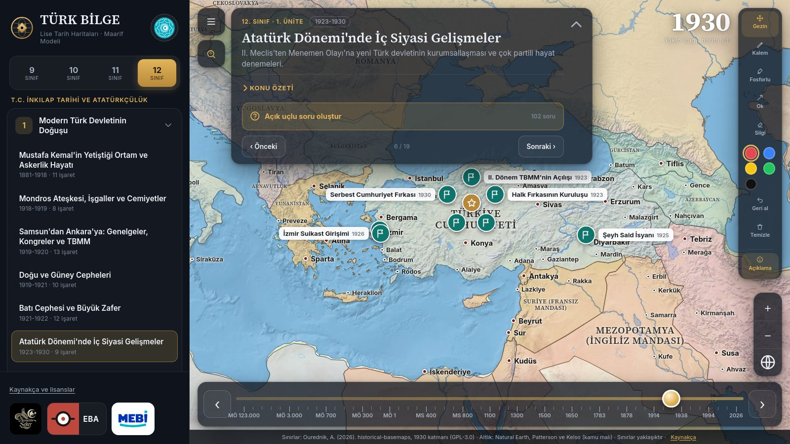
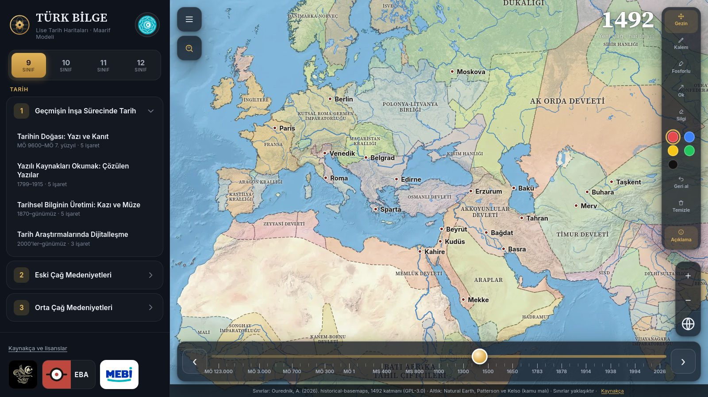

Akıllı tahta için etkileşimli tarih haritası
TÜRK BİLGE, lise tarih öğretmenleri için hazırlanmış ücretsiz bir tarih atlasıdır. 9, 10 ve 11. sınıf Tarih ile 12. sınıf T.C. İnkılap Tarihi ve Atatürkçülük derslerinin bütün konularını, dönemine ait sınırlarla harita üzerinde anlatır. Pardus, ETAP ve Windows'ta internetsiz çalışır.

Derste neler yapabilirsiniz?
Konuyu seç, harita hazır
Sınıfı ve konuyu seçince harita doğru yıla ve bölgeye gider. Savaşlar, antlaşmalar, seferler ve önemli yerler işaretli gelir.
Zaman çubuğu
MÖ 123.000'den 2026'ya kadar 53 dönemde devletlerin sınırlarını gösterir. Yılı kaydırınca sınırların nasıl değiştiğini görürsünüz.
Tahta için çizim araçları
Kalem, fosforlu kalem, ok ve silgi ile harita üzerine doğrudan çizim yapabilirsiniz. Dokunmatik tahtaya göre büyük düğmeler.
Açık uçlu soru bankası
Her konuda 100'ü aşkın açık uçlu soru, beklenen cevap ve puanlama anahtarıyla gelir. MEB ortak yazılı senaryolarıyla eşleştirilmiştir.
Şehirler dönemindeki adıyla
Byzantion, Konstantinopolis, İstanbul gibi şehirler seçilen yıldaki adıyla yazılır. Tıklayınca adların geçmişi açılır.
Bugünkü görünüm ve akıllı arama
Tarihî bir yerin bugün nasıl göründüğünü uydu görüntüsüyle açın. "Malazgirt nerede" gibi sorularla arama yapın.
İnternetsiz çalışır
Kurulum ve kullanım için internet gerekmez. Okul ağı kısıtlı olsa da haritalar sorunsuz açılır.
Bütün okul tek kurulumla
Bir bilgisayara kurun, okul ağındaki diğer tahtalar tarayıcıdan aynı programa bağlansın.
Türk Devletleri Teşkilatı
Günümüz Türk devletleri bayrak düğmeleriyle tek dokunuşta açılır, TDV İslâm Ansiklopedisi maddelerine ulaşılır.



Maarif modeline uygun bütün üniteler
Konular Türkiye Yüzyılı Maarif Modeli öğretim programlarına göre düzenlenmiştir. 12. sınıf, 2026 T.C. İnkılap Tarihi ve Atatürkçülük programını izler.
9. Sınıf Tarih
- Geçmişin İnşa Sürecinde TarihYazı ve kanıt, çözülen yazılar, kazı ve müze, dijitalleşme
- Eski Çağ MedeniyetleriTarım devrimi, şehirleşme, Hitit ve Mısır, Mezopotamya, Anadolu, Ege ve İran, Türklerde konargöçer yaşam
- Orta Çağ MedeniyetleriKavimler Göçü, Orta Asya Türk devletleri, ticaret yolları, Türk-İslam bilim ve kültürü
10. Sınıf Tarih
- Türkistan'dan Türkiye'ye (1040-1299)Dandanakan, Malazgirt, Büyük Selçuklu, beylikler, Haçlı Seferleri, Kösedağ
- Beylikten Devlete Osmanlı (1299-1453)Kuruluş, Rumeli'ye geçiş, Ankara Savaşı, Fetret Devri, İstanbul'un Fethi
- Cihan Devleti Osmanlı (1453-1683)Fatih'ten Yavuz'a, Kanuni, Akdeniz hâkimiyeti, Coğrafi Keşifler
11. Sınıf Tarih
- Değişen Dünyada Osmanlı (1683-1789)Viyana, Karlofça, Prut, Lale Devri, Küçük Kaynarca, Sanayi Devrimi
- Dönüşüm Sürecinde Osmanlı (1789-1908)Fransız İhtilali, Balkan isyanları, Kırım Savaşı, 93 Harbi, Berlin Antlaşması
- Savaşlar Sarmalında Osmanlı (1908-1918)Trablusgarp, Balkan Savaşları, I. Dünya Savaşı, Kafkas, Çanakkale ve diğer cepheler
12. Sınıf İnkılap Tarihi
- Modern Türk Devletinin DoğuşuMondros, işgaller, kongreler, TBMM, cepheler, Büyük Zafer, Lozan, Hatay
- Türk İnkılabı ve AtatürkçülükSiyasi, toplumsal, hukuk, ekonomi ve eğitim alanında inkılaplar, Atatürk ilkeleri
- II. Dünya Savaşı'ndan Küreselleşme Sürecine TürkiyeII. Dünya Savaşı, Kore ve NATO, Kıbrıs, demokratikleşme, terörle mücadele
Ücretsiz indirin
Pardus / ETAP akıllı tahta
- .deb dosyasını indirin.
- Dosyaya çift tıklayın, Pardus Paket Kurucu açılır.
- Kur'a basın (ETAP'ta yönetici parolası istenebilir).
- Program uygulama menüsünde TÜRK BİLGE adıyla yer alır.
Windows
- .exe dosyasını indirin. Kurulum gerektirmez.
- Çift tıklayınca program tarayıcıda açılır.
- "Bilinmeyen yayımcı" uyarısında Ek bilgi → Yine de çalıştır'a basın.
Ayrıntılı kullanım kılavuzu ve bütün dosyalar: İndirme sayfası
Sık sorulanlar
TÜRK BİLGE ücretli mi?
Hayır. Program öğretmenler için ücretsizdir.
Akıllı tahtaya (ETAP) nasıl kurulur?
.deb dosyasını indirip çift tıklayın, Pardus Paket Kurucu açılınca Kur'a basın. ETAP'ta yönetici parolası istenebilir. Kurulum için internet gerekmez.
İnternet olmadan çalışır mı?
Evet. Bütün tarihî haritalar, konular ve sorular internetsiz çalışır. Yalnızca uydu görüntülü "bugünkü görünüm" katmanı internet ister.
Hangi sınıfları ve konuları kapsıyor?
Türkiye Yüzyılı Maarif Modeli'ne göre 9, 10 ve 11. sınıf Tarih ile 12. sınıf T.C. İnkılap Tarihi ve Atatürkçülük derslerinin 12 ünitesi ve 76 konusu.
Windows'ta çalışır mı?
Evet. Windows için kurulum gerektirmeyen tek bir .exe dosyası vardır; çift tıklayınca program tarayıcıda açılır.
Okuldaki diğer tahtalardan nasıl açılır?
Programın kurulu olduğu bilgisayarın adresini diğer tahtaların tarayıcısına http://<bilgisayar-ip>:8090 biçiminde yazmanız yeterlidir.